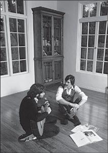

With Wozniak, 1981
When Mike Markkula joined Jobs and Wozniak to turn their fledgling partnership into the Apple Computer Co. in January 1977, they valued it at $5,309. Less than four years later they decided it was time to take it public. It would become the most oversubscribed initial public offering since that of Ford Motors in 1956. By the end of December 1980, Apple would be valued at $1.79 billion. Yes, billion. In the process it would make three hundred people millionaires.
1977年1月，马库拉加入了乔布斯和沃兹尼亚克的生意，将这两个新手创立的事业转变成了苹果计算机公司（AppleComputerCo.），当时他们对公司的估价是5309美元。过了不到4年，他们认为公司上市的时机到了。苹果公司造就了自1956年福特汽车之后，超额认购最为火爆的首次公开募股（IPO）。到1980年12月底，苹果的估值已高达17.9亿美元。没错，是“亿”，它也让300个人变成了百万富翁。
Daniel Kottke was not one of them. He had been Jobs’s soul mate in college, in India, at the All One Farm, and in the rental house they shared during the Chrisann Brennan crisis. He joined Apple when it was headquartered in Jobs’s garage, and he still worked there as an hourly employee. But he was not at a high enough level to be cut in on the stock options that were awarded before the IPO. “I totally trusted Steve, and I assumed he would take care of me like I’d taken care of him, so I didn’t push,” said Kottke. The official reason he wasn’t given stock options was that he was an hourly technician, not a salaried engineer, which was the cutoff level for options. Even so, he could have justifiably been given “founder’s stock,” but Jobs decided not to. “Steve is the opposite of loyal,” according to Andy Hertz-feld, an early Apple engineer who has nevertheless remained friends with him. “He’s anti-loyal. He has to abandon the people he is close to.”
丹尼尔·科特基却不在其中。他一直都是乔布斯的挚友，两人一起读大学，一起去印度，一起待在团结农场，一起经历了克里斯安·布伦南的怀孕风波。苹果公司还在乔布斯的车库时，他就加入了公司，到公司上市时，他仍然以时薪员工的身份在那里工作。但是他的级别不够髙，无法获得IPO之前奖励给员工的股票期权。“我完全相信史蒂夫，我想，他会像我以前照顾他那样地照顾我，所以我没有催促他。”科特基说。官方对此给出的理由是：科特基是一名领时薪的技术人员，不是领固定薪水的工程师，而只有全职的工程师才可以得到期杈奖励。然而即便如此，他也完全有资格获赠一些“发起人股”，但乔布斯对这些一直陪伴在自己身边的人十分冷漠。“史蒂夫就是忠诚的反义词，”苹果公司早期的工程师、一直与乔布斯保持着朋友关系的安迪·赫茨菲尔德说，“他完全处在忠诚的对立面，他总会拋弃那些和自己亲近的人。”
Kottke decided to press his case with Jobs by hovering outside his office and catching him to make a plea. But at each encounter, Jobs brushed him off. “What was really so difficult for me is that Steve never told me I wasn’t eligible,” recalled Kottke. “He owed me that as a friend. When I would ask him about stock, he would tell me I had to talk to my manager.” Finally, almost six months after the IPO, Kottke worked up the courage to march into Jobs’s office and try to hash out the issue. But when he got in to see him, Jobs was so cold that Kottke froze. “I just got choked up and began to cry and just couldn’t talk to him,” Kottke recalled. “Our friendship was all gone. It was so sad.”
科特基决定守在乔布斯的办公室外，当面请他解决这个问题。但每次碰面，乔布斯都对他置之不理。“最让我难过的是，史蒂夫从没跟我说过我没有资格得到期权，”科特基说，“作为朋友，他有义务告诉我。我问到关于股票的事情，他就让我去跟我的经理谈。”IPO之后过了大约6个月，科特基终于鼓起勇气，冲进乔布斯的办公室，想要解决这个问题。但当他走进办公室后，乔布斯的冷漠让他呆住了。“我气疯了，大哭了起来，再也说不出话来。”科特基回忆，“我们的友谊在那一刻彻底破裂了，太伤心了。”
Rod Holt, the engineer who had built the power supply, was getting a lot of options, and he tried to turn Jobs around. “We have to do something for your buddy Daniel,” he said, and he suggested they each give him some of their own options. “Whatever you give him, I will match it,” said Holt. Replied Jobs, “Okay. I will give him zero.”
设计出电源的工程师罗德·霍尔特分到了很多股票期杈，他试图让乔布斯改变主意。“我们必须为你的朋友丹尼尔做点儿什么。”他说，并且建议他们两人从自己的期杈中拿出一部分送给科特基。霍尔特说：“你给他多少，我就给他多少。”乔布斯说好的。我什么都不给他。”
Wozniak, not surprisingly, had the opposite attitude. Before the shares went public, he decided to sell, at a very low price, two thousand of his options to forty different midlevel employees. Most of his beneficiaries made enough to buy a home. Wozniak bought a dream home for himself and his new wife, but she soon divorced him and kept the house. He also later gave shares outright to employees he felt had been shortchanged, including Kottke, Fernandez, Wigginton, and Espinosa. Everyone loved Wozniak, all the more so after his generosity, but many also agreed with Jobs that he was “awfully na?ve and childlike.” A few months later a United Way poster showing a destitute man went up on a company bulletin board. Someone scrawled on it “Woz in 1990.”
沃兹尼亚克在处理此事的态度上，自然是与乔布斯截然不同的。在苹果的股票公开上市之前，他就把自己期权中的2000份以极低的价格卖给了40名中层员工。大多数受益人都赚到了足够买一套房子的钱。沃兹尼亚为自己和新婚妻子买下了一幢梦幻般的屋子，但她很快与他离婚并得到了房子。后来，他又把自己的股份赠与了那些在他看来受到了不公正待遇的员工，包括科特基、费尔南德斯、威金顿和埃斯皮诺萨。所有人都喜欢沃兹尼亚克，在他的慷慨捐赠之后更加如此，但很多人也同意乔布斯对他的评价，认为他“极其天真幼稚”。几个月后，公司的公告板上出现了一张联合慈善总会（UnitedWay）的海报，画面上是一个穷困潦倒的人。有人在海报上涂鸦道：“1990年的沃兹。”
Jobs was not na?ve. He had made sure his deal with Chrisann Brennan was signed before the IPO occurred.
乔布斯可不天真。在IPO之前，他已经签好了和克里斯安·布伦南之间的协议。
Jobs was the public face of the IPO, and he helped choose the two investment banks handling it: the traditional Wall Street firm Morgan Stanley and the untraditional boutique firm Hambrecht & Quist in San Francisco. “Steve was very irreverent toward the guys from Morgan Stanley, which was a pretty uptight firm in those days,” recalled Bill Hambrecht. Morgan Stanley planned to price the offering at $18, even though it was obvious the shares would quickly shoot up. “Tell me what happens to this stock that we priced at eighteen?” Jobs asked the bankers. “Don’t you sell it to your good customers? If so, how can you charge me a 7% commission?” Hambrecht recognized that there was a basic unfairness in the system, and he later went on to formulate the idea of a reverse auction to price shares before an IPO.
乔布斯是此次IPO的公众形象，他也帮助挑选了负责IPO的两家投资银行：一家是传统的华尔街公司摩根士丹利，另一家是旧金山的汉布里克特-奎斯特（Hambredit Quist）,这并不是一家传统的投行，当时的服务只针对部分领域。“摩根士丹利当时是极端保守的公司，史蒂夫对他们公司的人十分无礼。”比尔·汉布里克特（BillHambrccht）回忆说。尽管苹果的股禀必然会迅速暴涨，但摩根士丹利计划将股价定为每股18美元。“我们把这只股票定价为18美元，接下来会怎么样？”他问那些银行家，“你们难道不会把这只股票卖给你们的优质客户吗？如果卖的话，那你怎么可以收取我7%的佣金？”汉布里克特意识到，体系中存在着基本的不公平，他提出了自己的想法：在IPO之前，通过反向竞拍来为股票定价。
Apple went public the morning of December 12, 1980. By then the bankers had priced the stock at $22 a share. It went to $29 the first day. Jobs had come into the Hambrecht & Quist office just in time to watch the opening trades. At age twenty-five, he was now worth $256 million.
苹果公司在1980年12月12日的早晨上市了。银行家们最终定下的股价是22美元一股。当天收盘时，股价已经涨到了29美元。乔布斯赶到汶布里克特-奎斯特的办公室，观看了开市。在25岁这一年，他的身家达到了2.56亿美元。
Before and after he was rich, and indeed throughout a life that included being both broke and a billionaire, Steve Jobs’s attitude toward wealth was complex. He was an antimaterialistic hippie who capitalized on the inventions of a friend who wanted to give them away for free, and he was a Zen devotee who made a pilgrimage to India and then decided that his calling was to create a business. And yet somehow these attitudes seemed to weave together rather than conflict.
在史蒂夫·乔布斯的一生中，他贫穷过，也富裕过；既做过亿万富翁，也尝过破产的滋味，所以他对待财富的态度是很复杂的。他是个反对物质主义的嬉皮士，但他把朋友准备免费送出的发明转化成了获利的工具；他是佛教禅宗的狂热信徒，在印度进行过朝圣之旅，但之后又认定创业才是自己的使命。然而，很奇怪的是，这些特性在他身上并没有彼此矛盾，而是完美交织在了一起。
He had a great love for some material objects, especially those that were finely designed and crafted, such as Porsche and Mercedes cars, Henckels knives and Braun appliances, BMW motorcycles and Ansel Adams prints, B?sendorfer pianos and Bang & Olufsen audio equipment. Yet the houses he lived in, no matter how rich he became, tended not to be ostentatious and were furnished so simply they would have put a Shaker to shame. Neither then nor later would he travel with an entourage, keep a personal staff, or even have security protection. He bought a nice car, but always drove himself. When Markkula asked Jobs to join him in buying a Lear jet, he declined (though he eventually would demand of Apple a Gulfstream to use). Like his father, he could be flinty when bargaining with suppliers, but he didn’t allow a craving for profits to take precedence over his passion for building great products.
他对一些实体物质有着强烈的喜好，尤其是那些设计优雅、工艺精湛的物品，比如保时捷和奔驰汽车、双立人刀具和博朗电器、宝马摩托车和安塞尔·亚当斯（AmelAdams）的摄影作品、贝森朵夫（Bdsendorfer）钢琴和邦·奥陆芬（Bang Olufsen）的音响设备。但不管多么富有，乔布斯居住的房子从来都是朴实低调的，家中摆设之简单，即便一个震颤教①的教徒看了也会自惭形秽。他出行的时候从不会有浩浩荡荡的随行人员，他也没有个人助理，甚至从未雇过保镖。他买下一辆豪华轿车，但从来都是自己开。马库拉邀他一起买里尔（Lear）喷气式飞机的时候，他拒绝了（不过后来他要求苹果公司给他购置了一架湾流飞机）。和自己的父亲一样，乔布斯在和供应商讨价还价的时候也十分坚定，但他不允许对利润的追求凌驾于他对制造伟大产品的狂热之上。
Thirty years after Apple went public, he reflected on what it was like to come into money suddenly:
在苹果公司上市30年后，他回顾了当年一夜暴富的感受：
I never worried about money. I grew up in a middle-class family, so I never thought I would starve. And I learned at Atari that I could be an okay engineer, so I always knew I could get by. I was voluntarily poor when I was in college and India, and I lived a pretty simple life even when I was working. So I went from fairly poor, which was wonderful, because I didn’t have to worry about money, to being incredibly rich, when I also didn’t have to worry about money.
我从来没有为钱担心过。我成长在一个中产阶鈒家庭，所以我从没担心过会挨饿；我在雅达利公司的时候，意识到自己是个还不错的工程师，所以我知道自己肯定可以维持生计；我读大学和在印度的时候，自己选择了过苦日子，后来尽管我开始工作了，但我还是过着十分简单的生活。我经历过极度贫穷，那种感觉很美好，因为我不用为钱担忧，后来我变得特别有钱了，还是不用为钱担心。
I watched people at Apple who made a lot of money and felt they had to live differently. Some of them bought a Rolls-Royce and various houses, each with a house manager and then someone to manage the house managers. Their wives got plastic surgery and turned into these bizarre people. This was not how I wanted to live. It’s crazy. I made a promise to myself that I’m not going to let this money ruin my life.
He was not particularly philanthropic. He briefly set up a foundation, but he discovered that it was annoying to have to deal with the person he had hired to run it, who kept talking about “venture” philanthropy and how to “leverage” giving. Jobs became contemptuous of people who made a display of philanthropy or thinking they could reinvent it. Earlier he had quietly sent in a $5,000 check to help launch Larry Brilliant’s Seva Foundation to fight diseases of poverty, and he even agreed to join the board. But when Brilliant brought some board members, including Wavy Gravy and Jerry Garcia, to Apple right after its IPO to solicit a donation, Jobs was not forthcoming. He instead worked on finding ways that a donated Apple II and a VisiCalc program could make it easier for the foundation to do a survey it was planning on blindness in Nepal.
我看到苹果公司的一些人,大赚一笔后就觉得自己要过不同的生活。他们买下劳斯莱斯汽车和许多房子，每所房子都有管家，然后再雇一个人管理所有的管家。他们的妻子去做整形手术，把自己变得稀奇古怪。这不是我想要的生活方式。这太疯狂了。我答应过自己，不会让钱级了我的生活。
乔布斯并不是一个特别乐善好施的人。他曾短暂地创立过一个基金，但发现他雇来管理基金的那个家伙十分烦人，总是谈及做慈善的新方法以及如何运用捐赠。乔布斯开始轻视那些总是把慈善挂在嘴上或是认为自己可以彻底改变慈善事业的人。早些时候，他曾悄悄送出一张5000美元的支票，帮助成立拉里·布里连特的塞瓦基金会（SevaFoundation），该基金会致力于帮助穷人对抗疾病，乔布斯甚至同意了加入其董事会。但在一次会议上，乔布斯与董事会中一位著名的医生发生了争执，乔布斯认为基金会应该雇用里吉斯·麦肯纳来帮助筹款以及公关事务，但这位医生提出了异议。这次争议以乔布斯在停车场痛哭流涕结尾。第二天晚上，在感恩而死乐队为塞瓦基金会举办的慈善音乐会的后台，乔布斯与布里连特重归于好。然而，在苹果完成IPO之后，布里连特带着几位董事会成员——包括维维·格里维（WavyGravy）和杰里·加西亚（JerryGarcia）——来到苹果公司募集善款的时候，乔布斯并没有满足他们。相反，他努力说服他们，自己之前捐赠的一台AppleII和VisiCalc程序可以帮助基金会简化他们计划中的针对尼泊尔民众失明情况的调査。
His biggest personal gift was to his parents, Paul and Clara Jobs, to whom he gave about $750,000 worth of stock. They sold some to pay off the mortgage on their Los Altos home, and their son came over for the little celebration. “It was the first time in their lives they didn’t have a mortgage,” Jobs recalled. “They had a handful of their friends over for the party, and it was really nice.” Still, they didn’t consider buying a nicer house. “They weren’t interested in that,” Jobs said. “They had a life they were happy with.” Their only splurge was to take a Princess cruise each year. The one through the Panama Canal “was the big one for my dad,” according to Jobs, because it reminded him of when his Coast Guard ship went through on its way to San Francisco to be decommissioned.
乔布斯最大的一次个人赠与是送给自己的父母——保罗·乔布斯和克拉拉·乔布斯的，他送出了价值约75万美元的股票。老两口出售了其中一部分，用以偿还洛斯阿尔托斯的房子的抵押贷款，他们的儿子也回到家中庆祝。“这是他们人生中第一次没有背负贷款，”乔布斯回忆道，“他们请来了少数几个朋友，到家中开派对，那场面太温馨了。”但他们并没有考虑换一套好点儿的房子。“他们对那个没有兴趣，”乔布斯说，“他们对现在的生活很满意。”他们唯一的奢侈举动就是每年都乘坐公主号游轮度假一次。据乔布斯说，穿越巴拿马运河的那条航线是“我爸爸的最爱”因为会让他想起自己在海岸警卫队的时候，他们的船穿越巴拿马运河驶往旧金山退役的情景。
With Apple’s success came fame for its poster boy. Inc. became the first magazine to put him on its cover, in October 1981. “This man has changed business forever,” it proclaimed. It showed Jobs with a neatly trimmed beard and well-styled long hair, wearing blue jeans and a dress shirt with a blazer that was a little too satiny. He was leaning on an Apple II and looking directly into the camera with the mesmerizing stare he had picked up from Robert Friedland. “When Steve Jobs speaks, it is with the gee-whiz enthusiasm of someone who sees the future and is making sure it works,” the magazine reported.
Time followed in February 1982 with a package on young entrepreneurs. The cover was a painting of Jobs, again with his hypnotic stare. Jobs, said the main story, “practically singlehanded created the personal computer industry.” The accompanying profile, written by Michael Moritz, noted, “At 26, Jobs heads a company that six years ago was located in a bedroom and garage of his parents’ house, but this year it is expected to have sales of $600 million. . . . As an executive, Jobs has sometimes been petulant and harsh on subordinates. Admits he: ‘I’ve got to learn to keep my feelings private.’”
苹果公司的成功给乔布斯带来了名声。1981年10月，《企业》（Inc.）成为了第一家将乔布斯搬上封面的杂志。“这个人永久改变了商业世界。”杂志上如此宣称。封面上的乔布斯留着修剪整齐的胡子，时髦的长发，穿着牛仔裤和白衬衫，还有一件有点过于光滑的西服。他靠在一台AppleII上，用他从罗伯特·弗里德兰那里学来的迷人眼神直视着镜头。杂志写道；“史蒂夫·乔布斯说话的时候是极富热情的，他能预见未来，也正在努力创造未来。”
接下来是《时代》杂志，它在1982年2月推出了一个关于年轻企业家的专题报道。封面上是一幅乔布斯的画像，依然带着他极富魅力的眼神。故事中写道，乔布斯“实际上单独开创了个人电脑产业。”由迈克尔·莫里茨撰写的人物简介中写道：“6年前，这家公司还窝在乔布斯父母家中的卧室和车库里，在他的带领下，该公司有望在今年实现6亿美元的销售额，而乔布斯才不过26岁……作为管理人员，乔布斯有时候对待下属是脾气暴躁、严苛无情的。他自己也承认：‘我得学会如何控制自己的情绪。’”
Despite his new fame and fortune, he still fancied himself a child of the counterculture. On a visit to a Stanford class, he took off his Wilkes Bashford blazer and his shoes, perched on top of a table, and crossed his legs into a lotus position. The students asked questions, such as when Apple’s stock price would rise, which Jobs brushed off. Instead he spoke of his passion for future products, such as someday making a computer as small as a book. When the business questions tapered off, Jobs turned the tables on the well-groomed students. “How many of you are virgins?” he asked. There were nervous giggles. “How many of you have taken LSD?” More nervous laughter, and only one or two hands went up. Later Jobs would complain about the new generation of kids, who seemed to him more materialistic and careerist than his own. “When I went to school, it was right after the sixties and before this general wave of practical purposefulness had set in,” he said. “Now students aren’t even thinking in idealistic terms, or at least nowhere near as much.” His generation, he said, was different. “The idealistic wind of the sixties is still at our backs, though, and most of the people I know who are my age have that ingrained in them forever.”
尽管已经名利双收了，但乔布斯还是把自己看做一个反主流文化的孩子。有一次访问斯坦福大学的课堂时，他脱下了自己的威尔克斯·巴什福德西装和鞋子，坐在桌子上，盘腿打坐。学生们问了一些诸如苹果的股价何时会上涨之类的向题，乔布斯一概置之不理，而是开始讲对于未来产品的激情，比如某一天造出一台和书本一样小的电脑。渐渐地，不再有人问商业方面的问题了，乔布斯开始向这些衣冠整齐的学生们提问。“你们中还有多少人是处男处女？”他问道。下面有人不安地傻笑。“你们中有多少人尝试过迷幻药？”笑声更大了，只有一两个人举起了手。后来，乔布斯抱怨这一代的孩子，在他看来，这群孩子比他那一代的人更加物质主义，一心追求名利。“我上学的时候，60年代的那股思潮刚过，实用主义、目的性很强的社会风气还没有盛行他说，“现在的孩子根本不愿意用理想主义的方式来思考，连接近理想主义都谈不上。他们自然不会让现今的任何哲学问题占用他们太多的时间，因为他们要忙于学习自己的商科专业。”他说，自己那一代人就不一样。“60年代的理想主义之风仍然影响着我们，我认识的与我年龄相仿的人中，大多数人的心里都永远打下了理想主义的烙印。”——
注释：
①美国的一个教派，其教徒共同生活，生活方式很简朴。